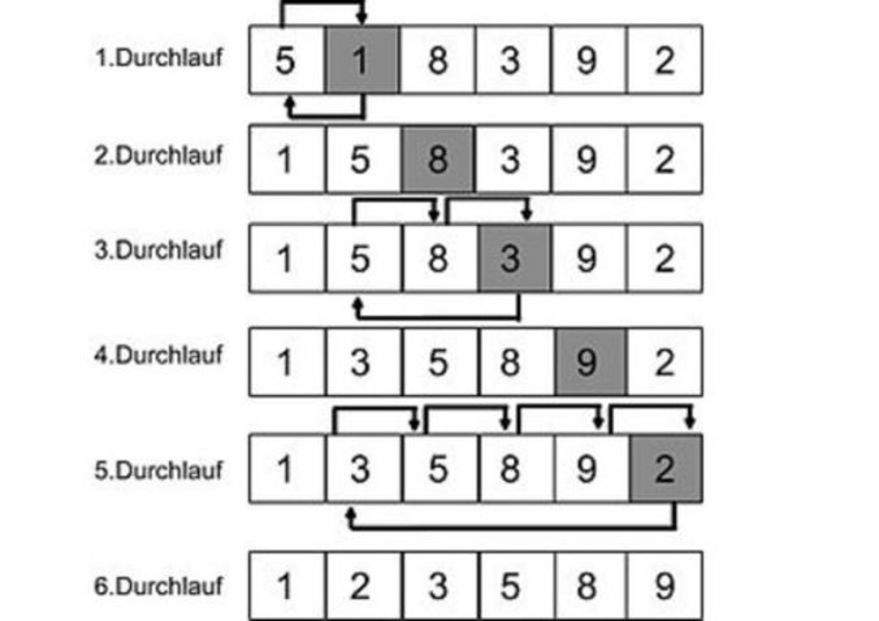
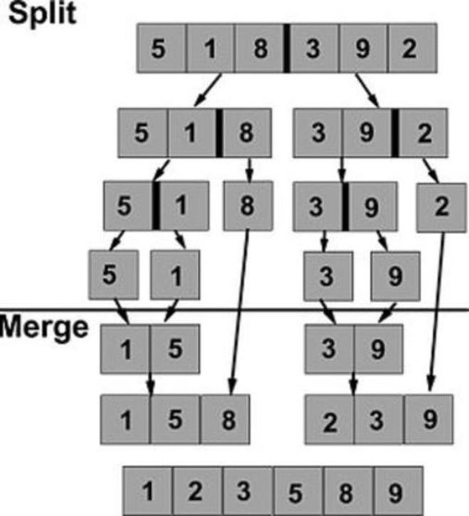

{% extends "../_base_template.html" %}
{% block title %}Lektion 12 - Sortieren{% endblock %}

{% block sections %}
<section data-markdown>
<textarea data-template>
<i class="fas fa-graduation-cap"></i> Sortieren - nun mit Listen - Insertion Sort
=============================

**Idee**

Stapel mit Karten sortieren: Wir beginnen mit der ersten Karte einen neuen Stapel. Anschliessend
nimmt man jeweils die nächste Karte des Originalstapels und fügt diese an der richtigen Stelle des neuen Stapels ein.

**Laufzeit**

* Best Case: $O(n)$ (wenn Stapel bereits sortiert ist)
* Durchschnitt / WorstCase: $O(n^2)$

**Darstellung Durchlauf**

Die allgemeine Implementation arbeitet auf der Originalliste, anstatt eine neue Liste zu erzeugen: "links" des aktuellen Elements sind die bereits sortierten Elemente (neuer Stapel),
"rechts" davon die noch unsortierten (Originalstapel):



</textarea>
</section>

<section data-markdown>
<textarea data-template>
<i class="fas fa-graduation-cap"></i> Sortieren - nun mit Listen - Insertion Sort
=============================

**Implementation in Java**

```java
void insertionSort(int[] F) {
    int m, j;
    for (int i = 1; i < F.length; i++) {
        j = i;
        m = F[i];
       while (j > 0 && F[j-1] > m) {
            // Verschiebe F[j-1] nach rechts:
            F[j] = F[j-1];
            j--;
       }
       F[j] = m;
   }
}
```

* Spielen Sie diesen Algorithmus mit LEGO durch - Verstehen Sie die Vorgänge?
* Implementieren Sie diesen Algorithmus in Java!
* Testen Sie ihn mit einem Array aus z.B. 10 zufälligen Zahlen!
* Versuchen Sie, den Vorganz zu verstehen:
  * Was bedeuten die Variablen? <i class="far fa-hand-point-right"></i> Geben Sie ihnen sinnvollere Namen!
  * Können Sie den Algorithmus auch mit einer List-Klasse (z.B. ArrayList) umsetzen? Versuchen Sie's!

</textarea>
</section>

<section data-markdown>
<textarea data-template>
<i class="fas fa-graduation-cap"></i> Sortieren - nun mit Listen - Merge Sort
=============================

**Idee**

MergeSort betrachtet die zu sortierenden Daten als Liste, und zerlegt sie in kleinere Listen, die jede für sich sortiert werden.
Die sortierten kleinen Listen werden dann im Reissverschlussverfahren wieder zu grösseren Listen zusammengefügt (engl.: _to merge_),
bis wieder eine sortierte Gesamtliste erreicht ist.

**Laufzeit**

* Best Case / Durchschnitt / WorstCase: $o(n*\log_2(n))$

**Darstellung Durchlauf**



</textarea>
</section>

<section data-markdown>
<textarea data-template>
<i class="fas fa-graduation-cap"></i> Sortieren - nun mit Listen - Merge Sort
=============================

**Animation**

Siehe Quelle: Wikipedia:

https://en.wikipedia.org/wiki/Merge_sort

** Pseudo-Code **

```
funktion mergesort(liste);
  falls (Größe von liste <= 1) dann antworte liste
  sonst
     halbiere die liste in linkeListe, rechteListe
     linkeListe = mergesort(linkeListe)
     rechteListe = mergesort(rechteListe)
     antworte merge(linkeListe, rechteListe)
```

```
funktion merge(linkeListe, rechteListe);
  neueListe
  solange (linkeListe und rechteListe nicht leer)
  |    falls (erstes Element der linkeListe <= erstes Element der rechteListe)
  |    dann füge erstes Element linkeListe in die neueListe hinten ein und entferne es aus linkeListe
  |    sonst füge erstes Element rechteListe in die neueListe hinten ein und entferne es aus rechteListe
  solange_ende
  solange (linkeListe nicht leer)
  |    füge erstes Element linkeListe in die neueListe hinten ein und entferne es aus linkeListe
  solange_ende
  solange (rechteListe nicht leer)
  |    füge erstes Element rechteListe in die neueListe hinten ein und entferne es aus rechteListe
  solange_ende
  antworte neueListe
```

* Spielen Sie diesen Algorithmus mit LEGO durch - Verstehen Sie die Vorgänge?
</textarea>
</section>

<section data-markdown>
<textarea data-template>
<i class="fas fa-graduation-cap"></i> Sortieren - QuickSort
=============================

QuickSort ist der "meistbenützte", oder auch berühmteste / am besten analysierte Sortieralgorithmus.
Er ist in vielen Fällen auch der schnellste.
Er operiert auf einem Array "in-place", erstellt also keine (neuen) Listen.

**Idee**

Zunächst wird die zu sortierende Liste in zwei "Haufen", oder Teillisten, aufgeteilt: Dazu wird ein
willkührliches "Pivot-Element" ausgewählt: in die linke Liste kommen alle Werte, welche kleiner als das Pivot-Element
sind, in die rechte Liste kommen alle Elemente, die grösser als das Pivot-Element sind. Die Elemente, die gleich dem Pivot-
Element sind, können beliebig verteilt werden. Nach dem Aufteilen sind alle Elemente links kleiner/gleich
der Elemente rechts.

Anschliessend wendet man dasselbe Verfahren wiederum (rekursiv) auf die beiden Teilliste an: Wieder werden die (Teil-)Listen in zwei Teile aufgeteilt, und so weiter, bis die Teillisten nur noch die Länge 0/1 aufweisen. Damit sind die
Daten sortiert!

**Laufzeit**

* Best Case / Durchschnitt: $o(n*\log_2(n))$
* Worst Case: $o(n^2)$
</textarea>
</section>

<section data-markdown>
<textarea data-template>
<i class="fas fa-graduation-cap"></i> Sortieren - QuickSort
=============================

**Darstellung Durchlauf**

In diesem Beispiel (Quelle: https://en.wikipedia.org/wiki/Quicksort) wird immer das letzte Element
der Liste als Pivot-Element gewählt.


</textarea>
</section>

<section data-markdown>
<textarea data-template>
<i class="fas fa-graduation-cap"></i> Sortieren - QuickSort
=============================

**Aufgaben**

* Spielen Sie diesen Algorithmus mit LEGO durch - Verstehen Sie die Vorgänge?
* Versuchen Sie, den Algorithmus anhand des Pseudo-Codes (Quelle: https://en.wikipedia.org/wiki/Quicksort) in Java zu implementieren!
  Verwenden Sie als Input einen Zahlen-Array.

```
algorithm quicksort(A, lo, hi) is
    if lo < hi then
        p := partition(A, lo, hi)
        quicksort(A, lo, p - 1 )
        quicksort(A, p + 1, hi)

algorithm partition(A, lo, hi) is
    pivot := A[hi]
    i := lo
    for j := lo to hi - 1 do
        if A[j] < pivot then
            if i != j then
                swap A[i] with A[j]
            i := i + 1
    swap A[i] with A[hi]
    return i
```

</textarea>
</section>
 {% endblock %}
